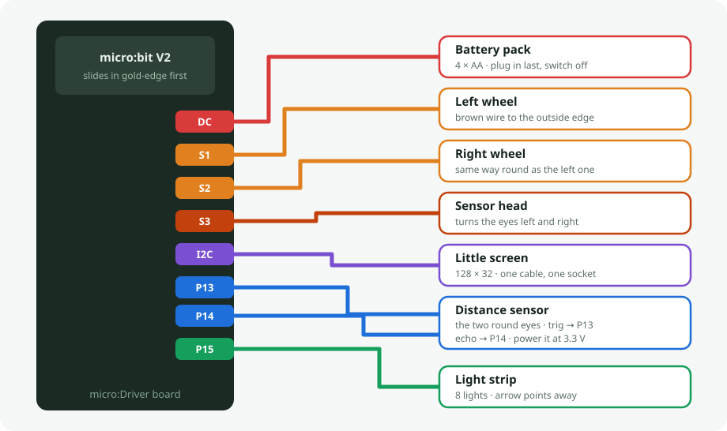

A micro:bit rover that drives on two servo wheels, looks around with an ultrasonic sensor on a third servo, and shows messages on a little screen.
You drive it from a web page over Bluetooth — nothing to install, no account, no WiFi. Open rxy_web in Chrome or Edge, press Connect, and the rover's own control panel appears.
The robot owns the layout. The app is a plain renderer: it connects, asks the rover what controls it has, and draws whatever comes back. There is nothing to configure in the browser, and no special build of the app for this robot.

| part | plugs into | notes |
|---|---|---|
| micro:bit V2 | the edge slot | V2 only — V1 hasn't enough memory for Bluetooth plus the strip and screen |
| left wheel servo | S1 | 360° continuous rotation; 90 means stop |
| right wheel servo | S2 | mounted mirrored — see Straight-line trim below |
| little screen | I²C port | SSD1306 128×32 at address 0x3C |
| distance sensor | P13 trig · P14 echo | HC-SR04P, the 3.3 V version |
| sensor head servo | S3 | turns the eyes left and right |
| light strip | P15 | 8 NeoPixels (not driven yet) |
| battery pack | DC socket | 4×AA, 3.5–5.5 V |
Still free for whatever you add next: P0 P1 P2 P8 P12 P16.
The screen and the motor driver both live on the I²C port and don't argue — the driver answers to 0x40, the screen to 0x3C. The wheels therefore cost no pins at all; they're driven over that same cable.
Measure the V pin on the P13 or P14 socket with the battery connected. It should read about 3.3 V. The distance sensor's echo output copies whatever voltage you feed it, so if that socket supplies 5 V instead, echo puts 5 V onto a 3.3 V pin. If it does read 5 V: take the sensor's red wire from a 3.3 V point, or fit a divider (4.7 kΩ from echo, 10 kΩ to ground).
Open makecode.microbit.org → Extensions, and paste this URL into the search box:
https://github.com/DFRobot/pxt-motorTwo extensions are needed. Paste both URLs:
https://github.com/DFRobot/pxt-motor
https://github.com/tinkertanker/pxt-oled-ssd1306| appears as | provides | |
|---|---|---|
| DFRobot/pxt-motor | motor | motor.servo(), motor.MotorRun(), motor.motorStop() |
| tinkertanker/pxt-oled-ssd1306 | OLED | OLED.init(), OLED.clear(), OLED.writeString() |
Paste the URL — do not search by name. DFRobot published this as plain motor, the most generic name on the platform, so a search returns a pile of look-alikes with this one somewhere among them. Pick the wrong one and it compiles cleanly and moves nothing, which is a miserable thing to debug.
These live behind the gear icon → Project Settings, and getting them wrong looks like a broken app rather than a wrong setting — so set them before you wonder why nothing connects.
| setting | set it to | why |
|---|---|---|
| No Pairing Required | on | The browser can then advertise-and-connect straight away. The other two modes — JustWorks (copy a pattern) and Passkey (verify a number) — make every child pair the micro:bit first, and after pairing you must reset it and re-enter pairing mode just to flash again. |
| Bluetooth UART service | on | This is the only service the rover uses. The whole protocol is lines of text over it. |
| accelerometer, button, LED, magnetometer, temperature, IO pin, event services | off | Each one costs memory and advertising space for nothing. The firmware never calls them. |
Radio and Bluetooth cannot both exist. Adding the Bluetooth extension removes the radio package, and MakeCode asks you to accept that. It's a hardware limitation, not a setting — so if a project uses radio.sendNumber anywhere, it cannot also be a Bluetooth robot. This firmware uses no radio blocks.
Transmit power is set in code (bluetooth.setTransmitPower), not in the settings — the firmware turns it down while the layout is transferring, which is the cheapest way to keep the link stable through a long burst.
One code rule worth repeating, because it cost real debugging: never write to the UART from inside the receive callback. Sending a reply from within onUartDataReceived starves the Bluetooth stack's buffers and wedges the whole firmware. Every reply in this file is queued and sent from the main loop instead.
Switch to the JavaScript view, paste firmware/rover-remote.ts, and download to the micro:bit.
There is no local build step. MakeCode compiles in the browser, so a fresh paste is the build — treat a successful paste as the thing that proves the code, not a formality.
Straight-line trim. The right servo is mounted facing the other way, so "forward" is down from 90 on that side and up on the left. Trim is added on the left and subtracted on the right, so a positive number means "more forward" on both wheels. Add it to both and the rover curves. Two 360° servos never run at matched speeds out of the box, so expect to trim every robot individually — drive it forward on a flat floor and nudge whichever wheel is lagging.
The 128×32 screen needs its start-up corrected. The common MakeCode screen libraries accept a height but hardcode the two registers that tell the display how many rows it actually has. After init, send 0xA8, 0x1F and 0xDA, 0x02, or text draws doubled and interlaced. It starts up without any error, so there's nothing to chase — you just get a strange-looking screen.
Everything specific to this board sits in one short seam at the top of firmware/rover-remote.ts:
wheels(l, r) drive mix → two servo pulses, with the mirror and the trim
wheelsStop() both wheels to neutral
pingCm() distance sensor on P13/P14; 0 means nothing came backEverything below that seam is the shared rxy stack — Bluetooth, the chunked layout transfer, the layout cache, telemetry, the drive watchdog, the D-pad handling. Changing to a different driver board means rewriting those three functions and nothing else.
app → robot GETCFGVER what layout do you have?
robot → app CFGVER <id> this one
(match) → CFGOK already cached, nothing to send
(differ)→ GETCFG send it all
app → robot SET <widget> <v> a control moved
robot → app UPD <widget> <v> a reading changedBecause the layout is cached against that id, only the first connection pays for the transfer.
The Level selector is on every panel, so you switch with a dropdown instead of reflashing. Each is a separate layout stored on the robot and only the chosen one is sent, so Beginner appears in under three seconds where Expert takes about nine.
| panel | what's on it |
|---|---|
| Beginner | pad, STOP, distance, alert. Nothing else. |
| Expert (the default) | everything the rover can do |
| Drive | jog each wheel, watch which way it turns, trim it straight |
| Distance | gauge, alert, graph, and the sensor head |
| Screen | type a message, see it on the glass |
The ultrasonic sits on its own servo, so the rover can look around without turning. Look aims it by hand, Ahead re-centres it, and setting Head to Sweep pans it back and forth on its own, so the distance graph draws the room instead of one fixed direction.
Sweep stops automatically in Avoid mode and the head returns to centre. Avoid decides where to go from the distance straight ahead, so with the head panning a wall beside the rover would read as an obstacle in front of it.
The sweep stops short of the ends, 30° to 150°. A head that slams into the chassis stalls the servo, which buzzes and draws current instead of moving.
Two 360° servos never run at matched speeds, so a rover always curves a little at first. Trim L and Trim R correct it: drive forward on a flat floor and raise whichever wheel is lagging. Expect single digits — more than about 10 usually means something mechanical.
Trim lives in memory only. This board has no storage, so it resets whenever the rover is switched off.
| mode | what it does |
|---|---|
| Manual | you drive with the pad |
| Avoid | the rover drives itself and backs away from obstacles |
| drive, trim | working on hardware |
| distance sensor, sweep head | working on hardware |
| screen | written — the 128x32 correction is untested on glass |
| five control panels | working on hardware |
| light strip | not driven yet |
Three of these need no extra parts — a micro:bit V2 already has a speaker, a microphone and a motion sensor.
Powered by Workshop-DIY.org